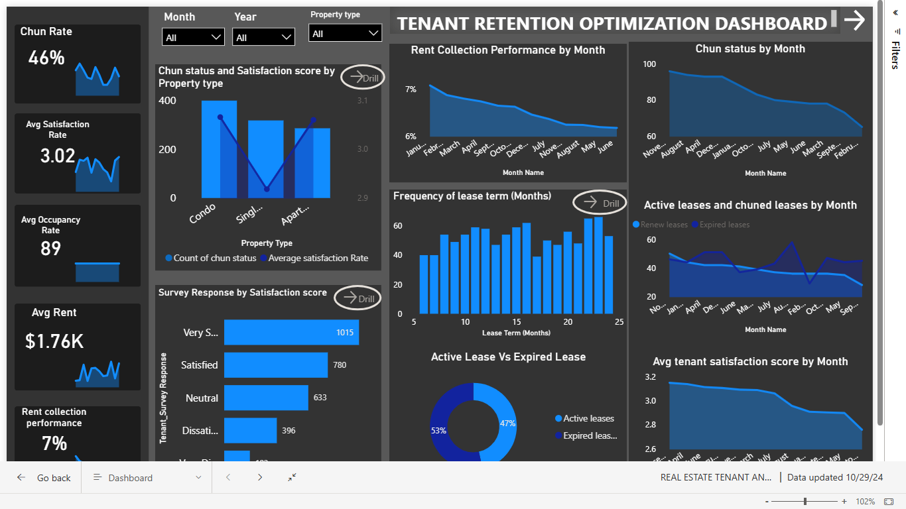
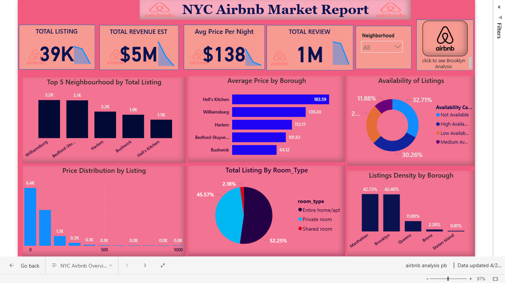
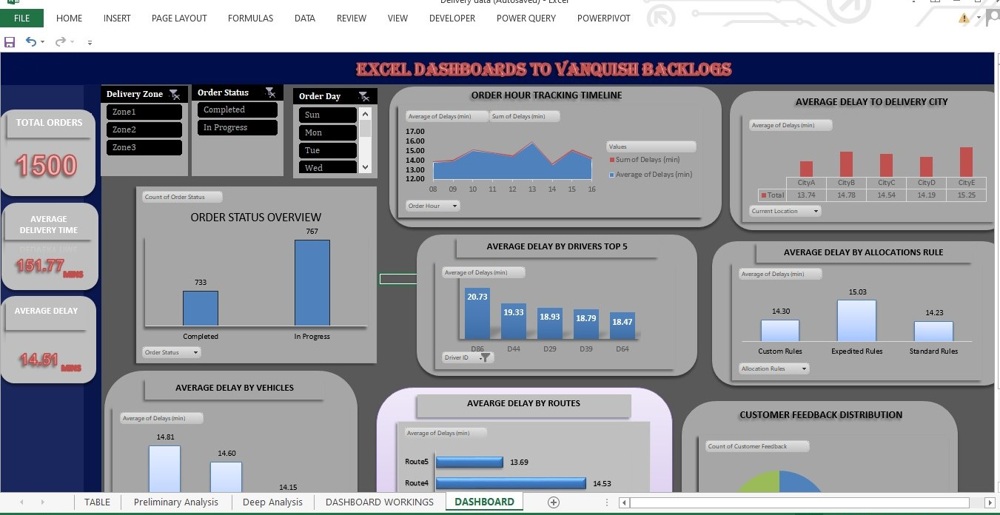
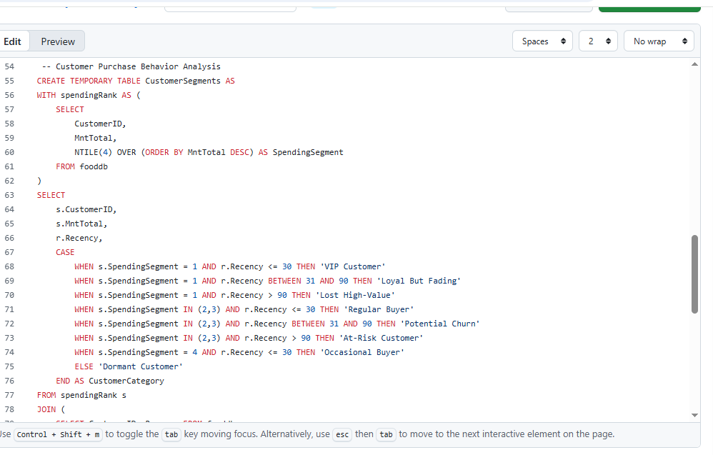
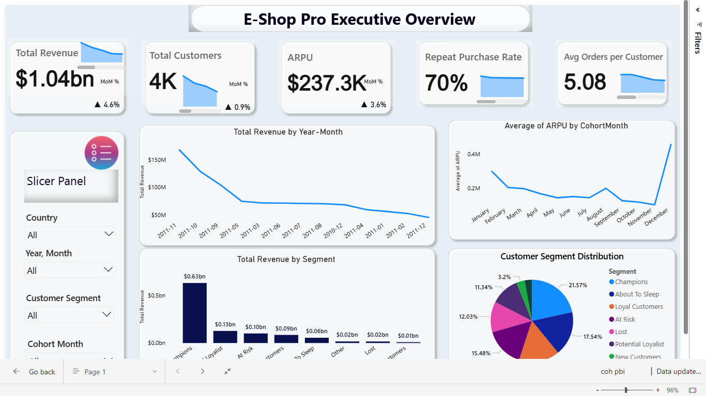

👋 Hi, I’m Ajayi Oluwaseyi
Data Analyst | BI Specialist | SQL | Power BI | Excel | Python
I’m a Data Analyst transitioning into Data Science, with a background in Psychology and a passion for uncovering insights through data.
With a BSc in Psychology, I bring a human-centered approach to data interpretation — blending behavioral understanding with analytical thinking. My toolkit includes Power BI, SQL, Excel, and Python, which I use to turn raw data into strategic, actionable insights.
I’m currently expanding my expertise into machine learning and advanced analytics. Beyond tools and tech, I value clarity and storytelling — making complex data understandable and impactful.
🧩 Featured Projects
🏢 Tenant Retention Optimization | Power BI

An interactive Power BI dashboard for HomeVibe Properties that analyzes tenant churn, lease renewals, and satisfaction metrics to improve customer retention.
- 4-page dashboard covering churn, rent renewal, and satisfaction
- Advanced DAX for renewal rate and satisfaction segmentation
- Action-driven insights for management decision-making
🏨 Airbnb NYC Market Analysis | Power BI

Analyzed Airbnb listings across New York City, visualizing key insights on pricing, host performance, availability, and neighborhood trends.
- Pricing distribution across boroughs
- Occupancy rates and host rankings
- Seasonality & dynamic slicers for neighborhood-level insights
📦 Excel Backlog Dashboard | Excel

A clean and functional Excel dashboard built to track order fulfillment and delivery efficiency, enabling management to identify bottlenecks and improve operations.
- Tracks order volume, driver performance, and delivery backlog
- Includes KPI panels and trend visualizations
- Automated with formulas and PivotTables
🧮 Customer Analytics (SQL)

SQL-based Customer Analytics Project exploring segmentation, churn, and revenue growth through customer-level transaction data.
- Retention and cohort segmentation
- Revenue and customer churn queries
- Delivered insights for marketing & customer success teams
📈 Customer Cohort & Retention Analysis | Power BI

A data storytelling dashboard that explores Cohort Retention, RFM Segmentation, and Lifetime Value to visualize customer behavior and engagement trends.
- Interactive retention heatmaps and cohort tables
- RFM-based segmentation and KPI cards
- Executive summary for business stakeholders
⚙️ Skills & Tools
- Languages: SQL | Python
- Visualization: Power BI | Excel | Tableau
- Database: MySQL | PostgreSQL
- Analytics: DAX | Pivot Tables | ETL | Data Cleaning | RFM | Cohort Analysis
- Soft Skills: Storytelling | Presentation | Problem Solving
💼 Services I Offer
- Data Cleaning & Transformation (ETL)
- Dashboard Design & Development (Power BI, Excel)
- SQL Data Analysis & Reporting
- Data Storytelling & Business Insights
- KPI Tracking & Executive Reporting
📬 Contact
📧 oluwaseyi1414@gmail.com
🔗 LinkedIn
🐦 Twitter
📞 +2349035283723
💬 “Turning data into actionable insights — one dashboard at a time.”